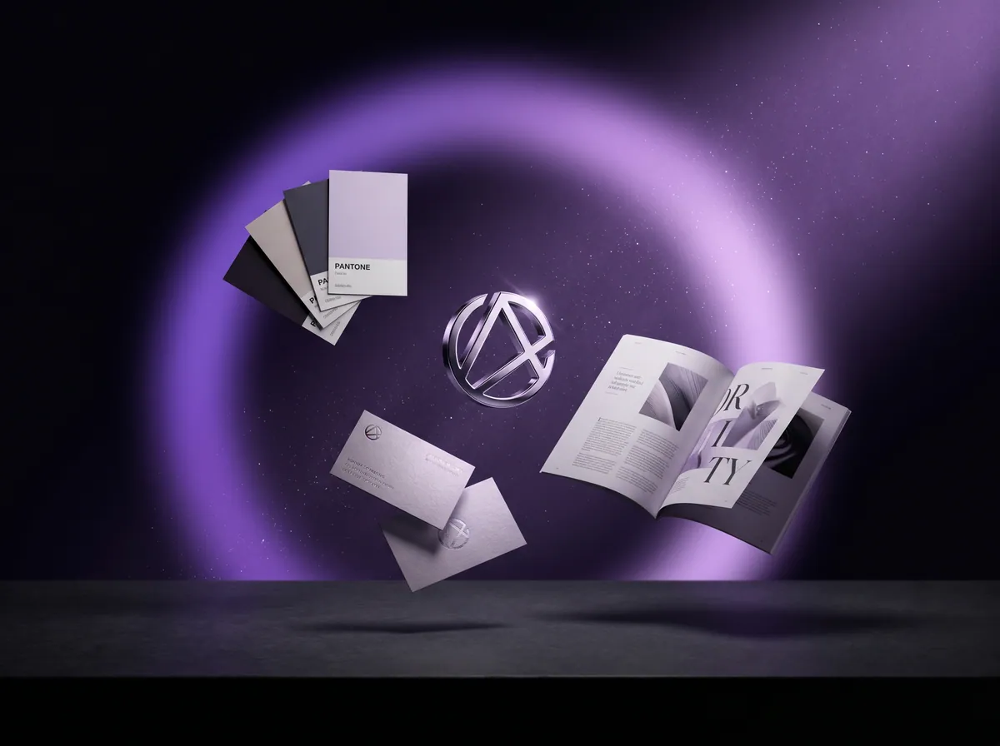
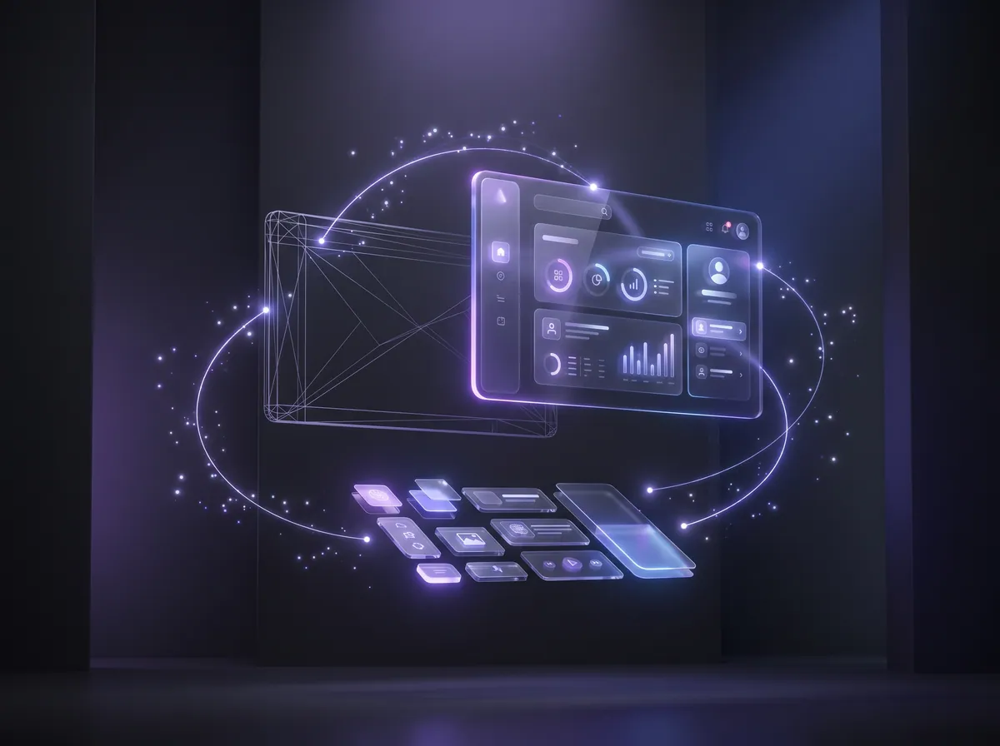

WORLD CLASS
Elevating brands worldwide through immersive web development, 3D experiences, AI automation, and relentless conversion strategy.
"To put it simply — we create strategic integrated experiences that form a human connection between brands and their targeted audience."
We're team players, passionate and talented experts who deliver exceptional results tailored for your business.
CRAFTING DIGITAL
REALITIES
Immersive Web · 3D Experiences · AI Automations
Strategic Integration
At our core, we create strategic, integrated experiences that forge genuine connections between brands and their target audiences. Our team is a dynamic blend of passionate, talented experts working collaboratively to deliver exceptional, tailored results. We thrive on bringing your vision to life — ensuring every interaction resonates and leaves a lasting impact.
Our Services
Web Design & Development
High-performance websites built for speed, conversion, and scale — from custom builds to full-stack platforms.
Marketing & Strategy
Data-driven marketing campaigns designed to amplify your reach. From SEO to full-scale paid acquisition, we position your brand exactly where your audience lives.

03 //AI Automations
AI-powered automation, smart workflows, and custom agents that cut manual work and scale your operations.

04 //UI & UX Design
We craft intuitive, user-centric interfaces that guide behavior and increase conversion rates seamlessly.
Our Process
Discovery
We deep-dive into your brand, audience, and goals. Understanding your world is the foundation of everything we build.
Strategy
We map a clear digital roadmap — defining architecture, user flows, and conversion strategy before a single pixel is designed.
Design
High-fidelity visuals that feel premium from the first glance. Every detail is intentional — typography, motion, colour, space.
Build
Clean, performant code. We develop with speed, accessibility, and scalability in mind — built to grow with your business.
Launch
Rigorous QA, smooth deployment, and post-launch support. We don't disappear after go-live — we stay in your corner.
Selected Archives
SCROLL TO EXPLORE. CLICK TO EXPAND.
Multi-Million Dollar Impact
Revenue-driven strategies across 300+ brandsScaling Fashion Brands
30+ brands elevated across UAE & GCCHigh-Performance Campaigns
Built to generate consistent, scalable resultsElite Events & Experiences
VIPs, ministers & influential figuresStrategic Tech Partnerships
Working with high-level & royal networks100+ Websites Delivered
Built for performance, conversion & scaleFull Creative Ecosystem
1000+ designs, 100+ videos, end-to-end executionWhat They Say
FAQ
Let's connect.
Our books are open. Drop us your details and we'll arrange a strategic discovery call.
Custom projects start from $3,000.